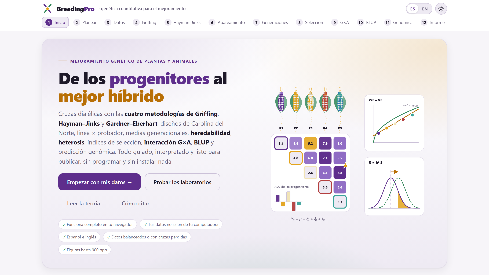
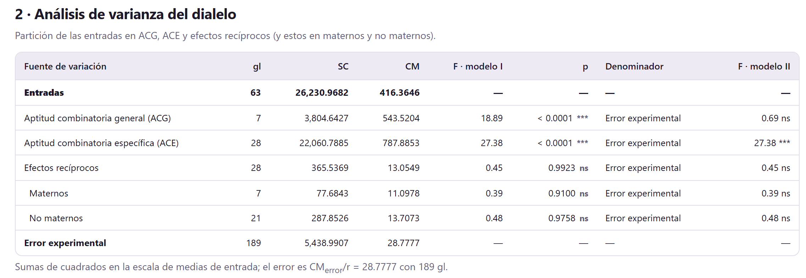
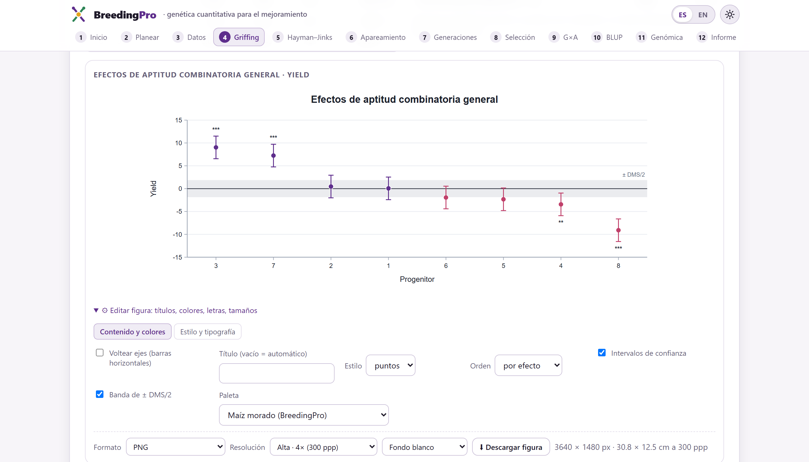
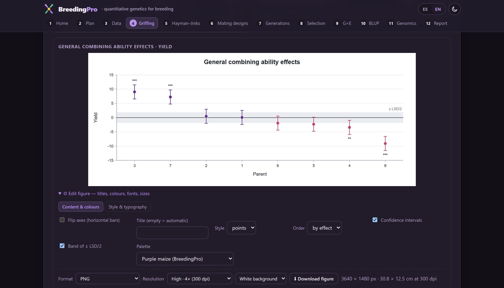
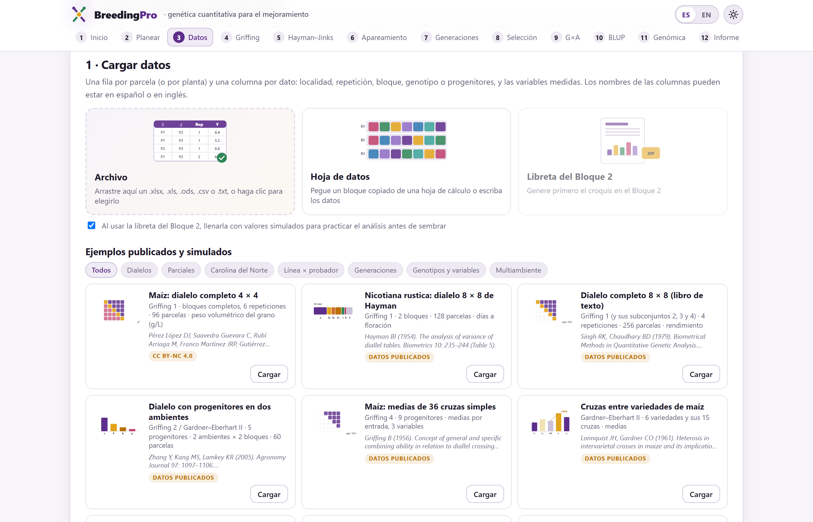

El identificador de objeto digital (DOI) se añadirá a ambas citas cuando la versión 1.0 se archive. Mientras tanto, la cita del programa aparece al final de cada informe del Bloque 12 y en la sección Cómo citar de la portada de la app.
BreedingPro funciona por completo dentro de tu navegador. Los archivos que abres se leen en tu computadora y nunca se envían a ningún servidor. Puedes analizar ensayos inéditos, datos de tesis en curso o materiales protegidos por convenios sin riesgo de que salgan de tu equipo.
Las ilustraciones, diagramas y capturas de pantalla de este manual son originales y se generaron con el propio programa o con código escrito para el manual. Los conjuntos de datos de ejemplo se describen en la sección I.7, cada uno con su fuente; los simulados se generaron con semillas fijas y se conocen sus valores verdaderos.
El manual sigue el mismo orden que la app: doce bloques numerados que se recorren de izquierda a derecha en la barra superior. Cada capítulo explica un bloque y lleva su mismo número: el capítulo 3 es el Bloque 3, y sus secciones, figuras y tablas se numeran 3.1, 3.2… Empieza con la teoría indispensable, describe lo que calcula y cómo leerlo, y termina con ejemplos paso a paso con los datos que ya vienen dentro del programa. La introducción va antes de los bloques y se numera aparte: I.1, I.2…
El color del bloque aparece en la apertura de su capítulo, en los números de sección, en la pestaña del borde de la hoja y en el índice, y es el mismo de la franja de la portada. Así sabes de un vistazo en qué parte de la app estás.
| Bloque | Nombre en la app | Qué hace |
|---|---|---|
| 1 | Inicio | Portada, dos laboratorios con genética simulada, teoría en lenguaje claro, referencias y cómo citar |
| 2 | Planear | Plan de cruzas, semilla y polinizaciones, croquis del ensayo, libreta de campo y potencia antes de sembrar |
| 3 | Datos | Carga de archivos, papel de cada columna, diseño reconocido, calidad de los datos y análisis de campo |
| 4 | Griffing | Aptitud combinatoria general y específica con los cuatro métodos de Griffing |
| 5 | Hayman–Jinks | Partición de Hayman, componentes genéticos, gráfico Wr–Vr, Gardner–Eberhart y heterosis |
| 6 | Apareamiento | Carolina del Norte I, II y III, cruza triple de prueba, línea × probador y dialelos parciales |
| 7 | Generaciones | Pruebas de escala, modelos de medias generacionales, varianzas, heterosis y factores efectivos |
| 8 | Selección | Heredabilidad, correlaciones y sendas, índices de selección y ganancia de la selección recurrente |
| 9 | G×A | Interacción genotipo × ambiente: regresiones, estadísticas de estabilidad, AMMI y biplot GGE |
| 10 | BLUP | Pedigrí, modelo animal y de padres, valores genéticos, REML y parámetros de cruzamiento de razas |
| 11 | Genómica | Marcadores, parentesco genómico, GBLUP, validación cruzada y predicción de híbridos |
| 12 | Informe | Informe con métodos redactados y referencias, PDF, HTML y paquete ZIP de resultados |
Aclaraciones y consejos prácticos que ahorran tiempo.
Lo que puede cambiar tus conclusiones si se pasa por alto.
La idea detrás de un análisis, sin fórmulas innecesarias.
Un caso con los datos incluidos en el programa, paso a paso.
| Si el resultado cae en este caso… | entonces esta es la lectura recomendada. |
Son guías para interpretar, no leyes: el conocimiento de tu especie y de tu programa siempre manda.
| Así se escribe | Significa |
|---|---|
| Ajustar el modelo | Un botón, casilla o menú de la app, con su texto tal como aparece en pantalla en español. |
| Editar figura›Estilo y tipografía | Una ruta: abre el primer elemento y luego el segundo. |
Rendimiento, .xlsx | Un nombre de columna, archivo o valor que se escribe tal cual. |
| σ²A, h², ĝi, ŝij | Parámetros y estimadores; su significado se explica la primera vez que aparecen y se reúne en el glosario. |
| ACG, ACE · GCA, SCA | Siglas en español; entre paréntesis, cuando ayuda, la sigla inglesa de la literatura. |
| ● ◐ — | Disponible · disponible en parte o con condiciones · no aplica. |
Qué es el programa, qué preguntas de un programa de mejoramiento responde, qué datos acepta y cómo se recorre de principio a fin. Incluye las cinco ideas de genética cuantitativa que sostienen el resto del manual.
BreedingPro es una plataforma para analizar los experimentos de un programa de mejoramiento genético de la cruza a la decisión: ayuda a planear las cruzas y el ensayo, reconoce el diseño de la tabla que sale del campo, estima la aptitud combinatoria, la acción génica, la heredabilidad y la estabilidad, predice valores genéticos con pedigrí o con marcadores, y entrega un informe con figuras, métodos redactados y referencias.
Todo ocurre dentro del navegador de internet. No hay que instalar nada, no se necesita saber programar y los datos no salen de la computadora. El mismo flujo sirve para plantas y para animales: dialelos y diseños de apareamiento de fitomejoramiento, y modelo animal y cruzamiento de razas de zootecnia.
| Bloque | Calcula o entrega |
|---|---|
| 1 | Laboratorio de dialelos (progenitores con genes concretos, parcelas con error y análisis de Griffing y Hayman) y laboratorio de selección (respuesta observada contra R = h²S); teoría y 63 referencias. |
| 2 | Plan de cruzas para 11 diseños, plantas por progenitor, semilla y polinizaciones, calendario de ciclos; croquis aleatorizado en bloques completos, látice α, completamente al azar o bloques aumentados; libreta de campo; errores estándar, diferencias detectables y potencia de las pruebas F. |
| 3 | Lectura de hojas de cálculo y texto, papel de cada columna, reconocimiento del diseño de apareamiento y del de campo, calidad y valores atípicos, análisis de varianza o REML por ambiente y combinado, medias ajustadas y heredabilidad del ensayo. |
| 4 | Métodos 1 a 4 de Griffing, modelos I y II, ACG, ACE y efectos recíprocos (maternos y no maternos) con errores estándar exactos, σ²A, σ²D, razón de Baker, mejores progenitores y cruzas, varios ambientes. |
| 5 | Partición de Hayman (a, b₁, b₂, b₃, c, d) o de Morley Jones, componentes D, H₁, H₂, F, h² y E, gráfico Wr–Vr y orden de dominancia, análisis II y III de Gardner–Eberhart, heterosis de cada cruza e identidades entre metodologías. |
| 6 | Carolina del Norte I, II y III, cruza triple de prueba, línea × probador y dialelos parciales, con cuadrados medios esperados calculados para el diseño real, efectos, componentes y epistasis. |
| 7 | Pruebas de escala A, B, C y D, prueba conjunta de escala y modelos de medias con epistasis, componentes D, H, F y E de las varianzas, heterosis, depresión endogámica y número de factores efectivos. |
| 8 | Varianzas, heredabilidad con intervalo exacto, coeficientes de variación y ganancia esperada; correlaciones genéticas y análisis de sendas; ocho índices de selección; ganancia por ciclo y por año de siete métodos de selección recurrente. |
| 9 | Regresión sobre el índice ambiental, ecovalencia, varianza de estabilidad, superioridad, confiabilidad, rangos, rendimiento–estabilidad, AMMI con WAAS, biplot GGE en siete vistas y varianza de la interacción por REML. |
| 10 | Pedigrí con autofecundación, consanguinidad y parentesco; modelo animal o de padres con ambiente permanente y efecto materno; valores genéticos con su confiabilidad; BLUP de los genotipos del ensayo; parámetros de cruzamiento de razas de Dickerson. |
| 11 | Control de calidad de marcadores, matriz de parentesco genómico, estructura, GBLUP y efectos de marcadores, validación cruzada, respuesta por año y predicción de cruzas simples no evaluadas, triples y dobles. |
| 12 | Informe con los resultados de cada bloque, métodos redactados con los ajustes usados y referencias; PDF, HTML y paquete ZIP con tablas, libros de resultados, figuras hasta 900 ppp y datos. |
Para fitomejoradores y zootecnistas que necesitan analizar sus ensayos con los métodos clásicos y modernos sin depender de un programa distinto para cada diseño; para estudiantes de posgrado que preparan una tesis y quieren entender lo que calculan; y para docentes de genética cuantitativa, que encuentran en los laboratorios del Bloque 1 y en los ejemplos simulados, con sus valores verdaderos conocidos, un apoyo para la clase.
Un programa de mejoramiento se hace preguntas concretas. La tabla I.2 muestra cuáles resuelve BreedingPro y en qué bloque.
| Pregunta | Bloque | Lo que entrega |
|---|---|---|
| ¿Cuántas cruzas, plantas, repeticiones y localidades necesito para detectar las diferencias que me interesan? | 2 | Plan de cruzas, semilla, croquis y potencia |
| ¿Mis datos tienen errores? ¿Qué diseño tiene la tabla? | 3 | Diseño reconocido, calidad y atípicos |
| ¿Qué progenitores combinan mejor? ¿Cuál es la mejor cruza? | 4 6 | ACG, ACE y su significancia |
| ¿La herencia es aditiva o dominante? ¿Hay epistasis o efectos maternos? | 5 6 7 | Componentes, grado de dominancia y pruebas de escala |
| ¿Cuánta heterosis hay y de dónde viene? | 5 7 | Heterosis media, de variedad y específica |
| ¿Cuánto avanzaré si selecciono? ¿Con qué método y qué índice? | 8 | Heredabilidad, ganancia e índices |
| ¿Qué variedad es estable y cuál gana en cada ambiente? | 9 | Estabilidad, AMMI y GGE |
| ¿Qué animal o línea tiene mejor valor genético, aun sin registros propios? | 10 11 | BLUP con pedigrí o con marcadores |
| ¿Qué cruza de razas o sistema de cruzamiento conviene? | 10 | Parámetros de Dickerson y predicciones |
| ¿Qué híbridos no evaluados serán los mejores? | 11 | Predicción de cruzas simples, triples y dobles |
| ¿Cómo lo escribo en la tesis o el artículo? | 12 | Informe con métodos y referencias |
Todo lo que calcula BreedingPro descansa en cinco ideas de la genética cuantitativa. Vale la pena tenerlas presentes; cada capítulo las retoma con más detalle.
La mayoría de los análisis parten de una tabla de parcelas que se carga en el Bloque 3: una fila por parcela (o por planta) y una columna por dato. La app reconoce el diseño a partir de los nombres y del contenido de las columnas, en español o en inglés, y te muestra lo que supuso antes de analizar.
| Diseño de apareamiento | Columnas que lo identifican | Se analiza en |
|---|---|---|
| Dialelo (métodos 1 a 4) | Hembra y macho de cada cruza; progenitores con hembra = macho; recíprocas si aparecen las dos orientaciones | 4 5 8 |
| Dialelo parcial | Cada progenitor cruzado con s de los demás | 6 |
| Carolina del Norte I y II | Machos y hembras (anidadas o cruzadas) y conjuntos | 6 8 |
| Carolina del Norte III y cruza triple de prueba | Plantas F₂ o líneas cruzadas con P₁, P₂ (y F₁) | 6 |
| Línea × probador | Líneas, probadores y, si se evaluaron, los progenitores | 6 8 |
| Medias generacionales | Una columna de generación: P₁, P₂, F₁, F₂, RC₁, RC₂… | 7 |
| Ensayo de genotipos | Entradas (variedades, líneas, clones, híbridos) sin progenitores | 8 9 10 |
El diseño de campo se reconoce igual: completamente al azar, bloques completos al azar, látice α y bloques incompletos, bloques aumentados con testigos repetidos, filas y columnas, o medias sin repeticiones. Con una columna de localidad o de año la tabla es multiambiente, y con una columna de planta se analizan las medias de parcela y el error de muestreo aparte.
Otros bloques reciben tablas propias: el Bloque 10, registros con individuo, padre y madre (y un pedigrí aparte si hace falta); el Bloque 11, una matriz de marcadores (en dosis 0/1/2, −1/0/1, presencia o ausencia, o letras) con fenotipos por individuo o con una tabla de híbridos.
.xlsx, .xls, .xlsm y .ods (se elige la hoja)..csv, .tsv y .txt, con coma, punto y coma o tabulador.NA, ., -, ? o faltante se leen como faltantes.El papel de cada columna decide el análisis. Una columna de progenitores leída como variable, o una repetición leída como localidad, cambia los resultados. El Bloque 3 asigna los papeles automáticamente, pero siempre te muestra lo que supuso en Datos›Papel de cada columna y te deja corregirlo antes de analizar.
index.html | La app. Ábrela con doble clic. |
Open BreedingPro.bat | Arranque opcional con servidor local. |
js/, css/ | El código del programa, con los ejemplos incluidos. |
vendor/ | El lector de hojas de cálculo y su licencia. |
tests/ | Las pruebas del programa: ábrelas con doble clic y todas deben salir en verde. |
manual/ | Este manual. |
BreedingPro completa a tu computadora, por ejemplo a Documentos. No separes index.html del resto de las carpetas.index.html. Se abre en tu navegador predeterminado, en la portada del Bloque 1.Con doble clic todo funciona. Si tu institución bloquea páginas abiertas como archivo local, usa Open BreedingPro.bat: inicia un pequeño servidor en tu propia computadora (puerto 9200) y abre la misma app en el navegador. Nada sale de tu equipo.
La app recuerda en tu navegador el idioma, el tema claro u oscuro, el estilo de las figuras y la hoja de datos del Bloque 3. Los datos cargados y los resultados no se guardan: al recargar la página hay que volver a cargar el archivo. Descarga los resultados de cada bloque (Resultados (.xlsx)) o el paquete del Bloque 12 antes de cerrar.
La barra superior acompaña a todos los bloques. Debajo, cada bloque ocupa una sola página que se lee de arriba abajo.

1 2 3 4 5 6 7Todos los bloques de análisis comparten la misma organización, así que basta aprenderla una vez:
| Parte | Qué contiene |
|---|---|
| Tarjetas numeradas | Cada bloque se divide en tarjetas (1 · Datos y modelo, 2 · Análisis de varianza…). Las primeras piden los ajustes y las siguientes muestran los resultados. |
| Mensajes de color | Morado informa, verde confirma, ámbar advierte y rojo detiene: por ejemplo, un diseño que no admite el análisis o una varianza que se estimó negativa. |
| Recuadros de resumen | Los números principales en grande, con una línea de contexto debajo. |
| Tablas | Con los valores P y sus asteriscos. Las tablas largas muestran las primeras filas y descargan todas. |
| Figuras | Editables y exportables (figura I.5). |
| Tarjeta final y barra | La última tarjeta reúne supuestos, fórmulas y referencias, y el botón Resultados (.xlsx) con todas las tablas del bloque; la barra de abajo regresa al bloque anterior o continúa al siguiente. |

Cada figura tiene debajo un editor plegado. Todo cambio redibuja la figura al instante, y el estilo que elijas (tema, letra, tamaños) se recuerda para las demás figuras de todos los bloques.

1 2 3 4 5 6El botón EN cambia al inglés toda la app: los textos, las tablas, los títulos y ejes de las figuras y el informe del Bloque 12. Así puedes preparar las figuras de un artículo en inglés sin volver a analizar. El tema oscuro descansa la vista en sesiones largas; las figuras conservan su propio fondo blanco para exportarlas.

El programa trae 21 conjuntos de datos en el Bloque 3 y otros en los Bloques 2, 10 y 11. Están incrustados en la app, así que cargan sin conexión. Los publicados reproducen tablas de artículos y libros; los simulados se generaron con semillas fijas y traen sus valores verdaderos, de modo que puedes comprobar qué tan bien estima cada método.
| Familia | Ejemplo en la app | Bloques | |
|---|---|---|---|
| Dialelos | Maíz: dialelo completo 4 × 4 | P | 4 5 |
| Nicotiana rustica: dialelo 8 × 8 de Hayman | P | 4 5 | |
| Dialelo completo 8 × 8 (libro de texto) | P | 4 5 8 | |
| Dialelo con progenitores en dos ambientes | P | 4 5 | |
| Maíz: medias de 36 cruzas simples | P | 4 | |
| Cruzas entre variedades de maíz | P | 5 | |
| Parciales | Maíz: dialelo parcial de 8 líneas | P | 6 |
| Carolina del Norte | Carolina del Norte I | P | 6 |
| Papa: Carolina del Norte II | P | 6 8 | |
| Carolina del Norte III | P | 6 | |
| Simulado: cruza triple de prueba | S | 6 | |
| Línea × probador | Línea × probador con progenitores | P | 6 |
| Genotipos y variables | Maíz: 13 híbridos y 15 variables | P | 8 |
| Multiambiente | Maíz: 13 híbridos en 4 ambientes | P | 8 9 |
| Avena: 10 genotipos en 14 ambientes | P | 9 | |
| Papa: 28 clones en 6 localidades | P | 9 | |
| Medias de 17 genotipos en 12 ambientes | P | 9 | |
| Simulado: líneas endogámicas con pedigrí | S | 9 10 | |
| Simulado: dialelo en látice α, 3 localidades | S | 3 4 | |
| Generaciones | Nicotiana rustica: seis generaciones | P | 7 |
| Simulado: medias generacionales por planta | S | 7 |

Además, el Bloque 2 genera el plan de cualquiera de sus 11 diseños con los progenitores que escribas; el Bloque 10 trae cinco ejemplos publicados de modelos animales y de padres, un rebaño ovino simulado, el pedigrí de las líneas simuladas y cinco ejemplos de cruzamiento de razas; y el Bloque 11, dos conjuntos publicados (líneas de trigo con marcadores DArT e híbridos de maíz dentado × cristalino) y dos simulados. Las fuentes completas están en el apéndice de referencias y en la tarjeta de cada ejemplo.
Los bloques están ordenados como se hace un programa de mejoramiento, pero no todos aplican a todos los datos. Cada tipo de experimento recorre su propia ruta, como líneas de metro que se detienen solo en algunas estaciones (figura I.8). El Bloque 3 es la estación común: ahí se reconoce el diseño y se revisa la calidad antes de cualquier análisis genético.
| Si la tabla tiene hembra y macho de un grupo de progenitores cruzados entre sí… | entonces Griffing (4), Hayman–Jinks (5) y parámetros (8). |
| Si los machos y las hembras son grupos distintos (CN, L × P) o el dialelo es parcial… | entonces diseños de apareamiento (6) y parámetros (8). |
| Si hay una columna de generación (P₁, P₂, F₁, F₂…)… | entonces generaciones (7). |
| Si son genotipos en varias localidades o años… | entonces parámetros (8), estabilidad (9) y, con pedigrí, BLUP (10). |
| Si tienes pedigrí o marcadores… | entonces BLUP (10) o genómica (11). |
El Bloque 3 hace esta elección por ti al reconocer el diseño y lo indica en la tarjeta 3 · Diseño reconocido.
Las tablas de BreedingPro acompañan cada estimación con su error estándar (EE) y cada prueba con su valor P, escrito con cuatro decimales (o «< 0.0001») y con la marca de significancia de la literatura agronómica:
| Marca | Valor P | Lectura |
|---|---|---|
| *** | P < 0.001 | Evidencia muy fuerte |
| ** | 0.001 ≤ P < 0.01 | Evidencia fuerte |
| * | 0.01 ≤ P < 0.05 | Evidencia moderada |
| ns | P ≥ 0.05 | No significativo al 5 % |
La misma tabla da pruebas distintas según el modelo. Si los progenitores o los ambientes son los únicos que interesan, son fijos y se prueban contra el error; si son una muestra de una población, son aleatorios, se estiman sus varianzas y algunas pruebas usan otro denominador. Los Bloques 4 y 9 muestran ambas lecturas y dicen cuál corresponde a cada caso.